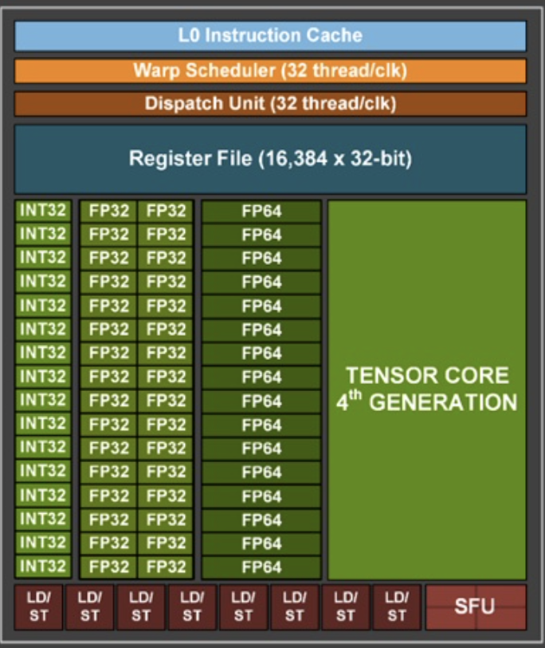
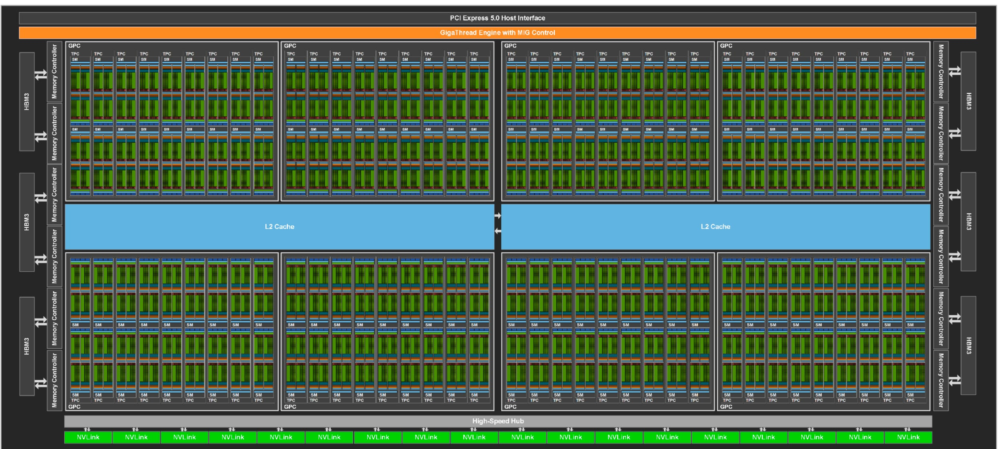
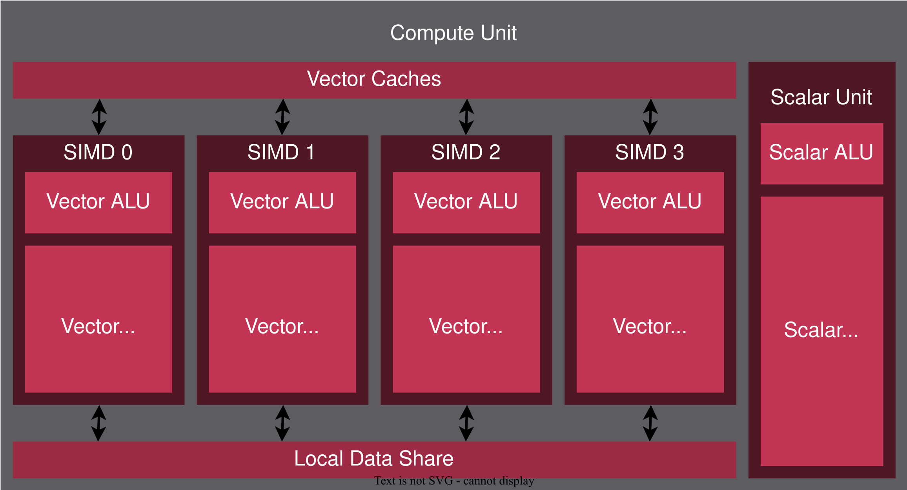

GPU Compilers
Challenges in Learning About GPUs
- Architectural Variations
- All the vendors keep changing the architecture. Different vendors build different hardware. Graphics programs run on all vendors’ hardware because vendors ship their own drivers and do finalization on the device.
- Inconsistent Terminology
- Vendors use different terms for the same features and reuse CPU terms somewhat differently. For instance, a “Cuda core” is not the same as a ‘CPU core’.
- Legacy Terminology
- Some terms come from the GPU’s history of graphics. For example, a shader is a program.
- Software Abstractions
- Big frameworks hide the details.
- CUDA’s Market Dominance
- Most explanations use CUDA terms since CUDA is the market leader. For instance, AMD uses ‘wave’ to mean more or less the same as a CUDA ‘warp’, but lots of AMD documentation uses ‘warps’.
- CUDA: Language and Model
- CUDA is both a programming language and a programming model, so you can have CUDA Fortran, CUDA Python, etc.
hardware styles NVIDIA model
- compute and graphics parts have same programmable parts, compute leaves out non-programmable features
- graphics customers pay a tax for the compute instructions
- more transistors for compute instructions
- one big die
hardware styles AMD model
- compute has extra instructions (no tax on graphics customers to support compute)
- chiplet model (great engineering!)
- R series is graphics, C series is compute
programming model
both vendors use the CUDA programming model. AMD supports a variation of the CUDA language
machines have multiple SIMD processors, each SIMD can be running a different instruction but each lane of a SIMD runs the same instruction
a lane of a SIMD is called a thread
the programming model is SIMT (single instruction multiple threads)
User writes a scalar program, compiler maps that program to a lane of a SIMD, many instances of the program run at once, hardware combines copies of the scalar program into warps, hardware schedules warps into the SIMD engines
programs are called kernels
threading model
warps/ waves/wavefronts
- threads are grouped together into warps.
- Size is fixed by hardware (usually 32), programmers know this and often make data set sizes a multiple of 32.
- since all threads in a warp are running the same instruction, there is no need for explicit synchronization
- there are a few instructions that work across a warp, - which break the model and give the compiler problems
thread blocks groups of warps,
- threads within a block can access a fast scratchpad memory (called shared or LDS) - Violates the C memory model.
- threads are identified by a 3d index inside a block
- thread blocks need synchronization operations.
- hardware schedules each block into execution units. Max block size is limited by the size of a execution unit.
grid groups of blocks,
- 3d collection of blocks,
- usually hardware limits mean that all the threads in a grid do not run at the same time
- programmers need to make grids big enough to fill the hardware
- software launches a grid and a program
- threads within a grid but in different blocks do not have sync operations
Heterogeneous programming
the cpu is called the host
the gpu is called the device
cpu launches grids and kernels to gpu
Computations launched on the device execute asynchronously with respect to the host, and it is the user’s responsibility to synchronize
memory spaces
- cpu and gpu have different memory spaces (cpu can copy from one to the other). Some amount of combined memory (slower then not combined)
- gpu has shared/lds memory which can be accessed by threads within a block, passing an address to a different block does not work
- main gpu memory is called global accessible by all threads
- gpu has per thread memory called local or scratch or private memory - unlike C, passing an address in local memory to another thread does not work. (under some restrictions AMD implements part of the C memory model)
- a few special gpu memory types: constant, texture, surface (left over from graphics)
- gpu can treat registers as fast memory
Hardware
NVIDIA
nv image level 0
Each box here is hardware, an int32/fp32/fp64 can perform one operation, so here we have 32 fp32 units which can do 32 float operations in parallel as well as 16 int32 and 16 fp64 units , there are also 8 units can do loads or stores and a final special function unit that can do transcendental operations like sin/cos
under some conditions two instructions (a float and an int) from the same warp can execute at the same time
I’m not going to talk much about the tensor cores
all these units execute the same instruction (SIMT) Simple instruction multiple thread (not the same as SIMD but related )
one instruction does vector work
add 32 float32 values (all coming from registers) and store the result in 32 other registers
Notice no branch prediction, no out of order execution
great at switching a warp holds the instruction, it knows which registers it owns (continuous set, so it just needs a start and length) switching to a different warp, means changing these two numbers and the pc (this is done by the dispatch unt )
When we do a load, we need to wait for the result. CPU might do some kind of out of order execution, a gpu switches to another warp
finally we need to pick the warp to switch to, this is done by the warp scheduler (half of the hardware scheduler)
streaming multiprocessors (SM)
nvidia packs 4 execution engines into a SM (streaming multi-processor) ands an L1 instruction cache, a special memory accelerator for tensors and 256kb l1 data cache/ shared memory block

pack sm’s together
AMD
and
AMD has a similar block with some important differences
- At the bottom of a compute core there are 4 general purpose simd engines each of length 16 and one scalar engine
Given 5 waves, this compute core can execute 4 vector instructions and one scalar instruction per clock Two instructions from the same wave never execute at the same time
The SIMD engines can execute different instructions
The simd sizes vary over different chips
amd CDNA

packing sms

simd and control flow
to execute an if then else
- compute the if condition
- turn off the lanes where the condition is false
- execute the if side
- flip the lanes
- execute the else side
time is the sum of the times for then and the else
number of warps in flight
since an entire block has to fit on one compute unit/sm, the resources used in the block limit the number of warps on a sm,
if a warp needs 100 registers and there are 256 vector registers on the compute unit, then two warps can run at once, compiler controls number of registers
latency
gpu is a throughput machine- how many threads finish in a unit of time not how long a single thread takes to finish
unlike the cpu, gpu can have lots of loads in flight, time for these loads overlap so compiler tries to group loads together, but this needs extra registers
- a warp issues a group of loads
- warp issues a wait for loads to finish (hardware in cpu, software in gpu)
- hardware switches to another warp (if there is on), good to have a lot of warps 1, if all warps waiting for memory, alu units are idle
differences
- NVIDA committed to AI, and cut down on the non-tensor operations, AND did not
- Generally you need more waves on an AMD processor
- AMD added infinity connectors so that they could use chiplets
- AMD has a scalar processor - The programming model does not - So its up to the compiler to use it
- NVIDIA has 1 architecture for the compiler, AMD has two
compiler model
- like a regular compiler for a scalar machine
- new problem: registers used in warp limits number of warps in flight, so ra is different
- new problem: control flow is more critical
- new problem: latency means grouping loads but not to much
- new problem: arch keeps changing
thread coarsening
Suppose we are computing a matrix multiply
we could say each thread writes one result so a 32 x 32 matrix would need 32 * 32 threads each thread reads one column and one row of the input,
we have a lot of reuse (redundant loads of data )
we could say each thread writes 4 results, so we need 1/4 of the threads each thread reads a raw and 4 columns
technique
- merge multiple threads so each resulting thread writes multiple outputs
- do the redundant work once and save in registers
- use the registers for computing all the outputs
But
- needs extra registers
- increased efficiency but reduced parallelism
After thread coarsening, computation from merged threads can see each others results
doing this by hand
for (atomid=0; atomid<numatoms; atomid++) {
float dy = coory - atominfo[atomid].y;
float dysqpdzsq = (dy * dy) + atominfo[atomid].z;
float dx1 = coorx1 - atominfo[atomid].x;
float dx2 = coorx2 - atominfo[atomid].x;
float dx3 = coorx3 - atominfo[atomid].x;
float dx4 = coorx4 - atominfo[atomid].x;
energyvalx1 += atominfo[atomid].w * (1.0f / sqrtf(dx1*dx1 + dysqpdzsq));
energyvalx2 += atominfo[atomid].w * (1.0f / sqrtf(dx2*dx2 + dysqpdzsq));
energyvalx3 += atominfo[atomid].w * (1.0f / sqrtf(dx3*dx3 + dysqpdzsq));
energyvalx4 += atominfo[atomid].w * (1.0f / sqrtf(dx4*dx4 + dysqpdzsq)); } …